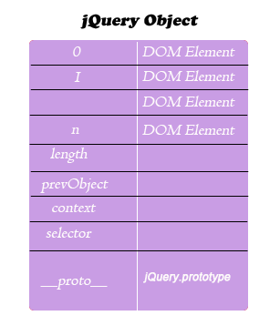

jQuery内部原理浅析
这段时间在学习研究jQuery源码，受益于jQuery日益发展强大，研究jQuery的大牛越来越多，学习的资料也比前两年好找了，有很多非常不错的资源，如高云的jQuery1.6.1源码分析系列（http://www.cnblogs.com/nuysoft/archive/2011/11/14/2248023.html）。这些教程非常细致的分析了jQuery内部原理和实现方式，对学习和理解jQuery有非常大的帮助。但是个人认为很多教程对jQuery的整体结果把握不足，本人试图从整体来阐述一下jQuery的内部实现。

大家知道，调用jQuery有两种方式，一种是高级的实现，通过传递一个参数实现DOM选择，如通过$("h1")选择所有的h1元素，第二种是较为低级的实现，如果通过$.ajax实现ajax的操作。那么，这两种方式到底有何不同？用typeof函数检测$('h1')和$.ajax,类型分别为object和function，稍微学过jQuery的都知道或者听过过，前者返回的是一个jQuery对象，那么jQuery对象是什么，它和jQuery是什么关系呢？我们先来通过for
(var i in $('')) document.write(i+"  :::
"+$("")[i]+"<br/>");打印一下jQuery对象的属性和对应的值,可以看到它有100多个属性，通过console输入$("*")可以看到大部分属性是继承自jQuery原型的属性，jQuery对象实际上是这样一个对象:



我们来看jQuery源码
